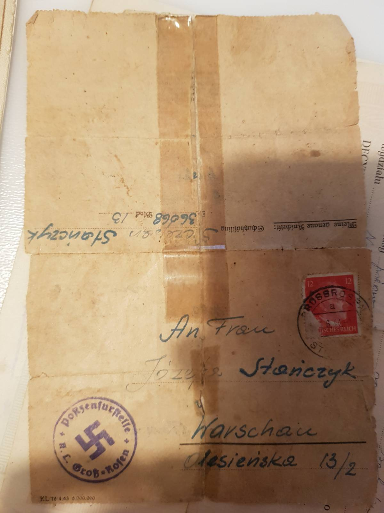

Zginął w niemieckim obozie koncentracyjnym Mauthausen
Gross-Rosen nr 36068
Mauthausen nr 129358
Pochodził ze wsi Bobrek, niedaleko Stromca, w okolicach Radomia. W latach 1938–1944 mieszkał z rodziną na Mokotowie w Warszawie przy ulicy Olesieńskiej 13/2. W marcu 1941 roku został aresztowany w Warszawie.
21 maja 1944 roku został osadzony w niemieckim obozie koncentracyjnym Gross-Rosen i otrzymał numer więźniarski 36068. 15 i 16 lutego został przewieziony w morderczych warunkach do niemieckiego obozu koncentracyjnego Mauthausen w Austrii. Tam został zarejestrowany pod numerem więźnia 129358.
Według rejestru zgonów zmarł 22 lutego 1945 roku z powodu niewydolności krążenia i ostrego zapalenia jelita grubego. Należy jednak zauważyć, że podana przyczyna zgonu niekoniecznie odpowiada rzeczywistej przyczynie śmierci więźnia. Morderstwa były często ukrywane pod wpisami dotyczącymi naturalnych przyczyn zgonu.
